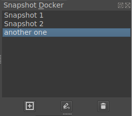

Snapshot Docker¶
A docker that allows you to create snapshots (copies) of the current document, and to return to these states afterwards.
The main part of the docker is a list of all saved snapshots. At the bottom of the docker, there are three buttons: from left to right, they are Create snapshot, Switch to selected snapshot, and Remove selected snapshot. You can create a snapshot from the current state of the document by clicking Create snapshot. Click Switch to selected snapshot to switch to the selected snapshot. The undo stack will be discarded after switching. If you would like to save the current state, make another snapshot before switching. Click Remove selected snapshot to delete the selected snapshot. You can edit the names of snapshots by double-clicking them.
Please be aware that all snapshots will be gone if you close the document. If you want to keep them, you need to explicitly save or export them.